數學養成島｜風格版本比較
每一版的樣張都留一個分頁，方便前後比較。立體浮島的兩種風格目前只有樣張，遊戲畫面還沒有換；吳老師選定方向後才會全面替換。回到遊戲
現行遊戲保留為選項之一
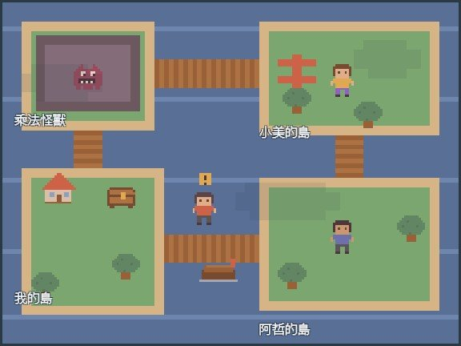
島嶼（遊戲實際畫面）
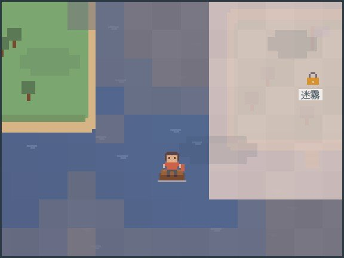
大地圖與迷霧（遊戲實際畫面）
Blender 3D 渲染樣張，未進遊戲比 v1 新增
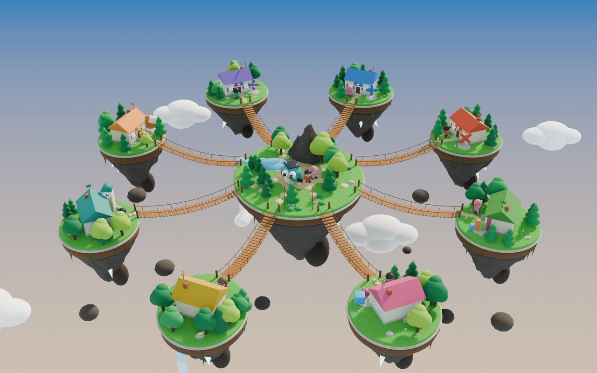
大地圖：暖色低角度光，每座教室門口有一位學生
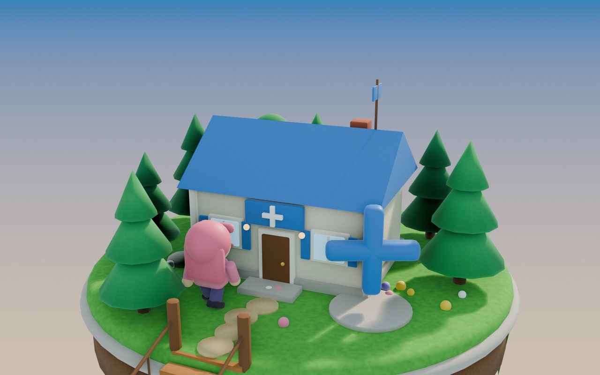
教室特寫（加法）：門牌圖示一眼認出科目，窗框、百葉窗、門燈、前庭小路
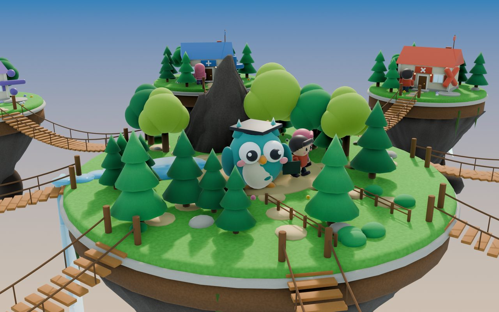
中央廣場：小算放大，加了腮紅、圍巾、小黑板
和 v1 比：光線改成暖色、教室放大並加門牌與窗框、島邊加石緣、花和水晶。小算的正面特寫還在重拍，之後補進這一頁。低多邊形版這次還沒更新。
Blender 3D 渲染樣張，未進遊戲
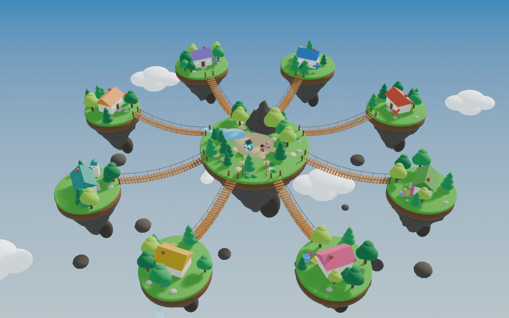
大地圖概念：中央廣場島＋八間主題教室浮島，以吊橋相連
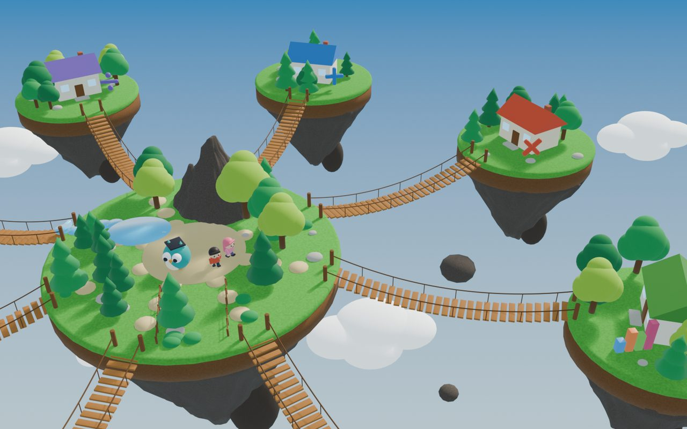
近景：岩山、池塘、樹林，吉祥物「小算」與學生
每間教室旁有主題道具：× 乘法、+ 加法、÷ 除法、圓餅分數、鐘塔、金幣、積木圖形、長條圖。吉祥物與角色都是自己設計的。
Blender 3D 渲染樣張，未進遊戲
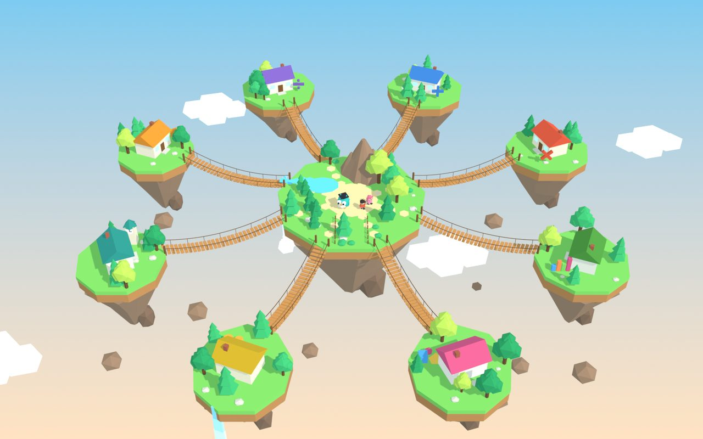
大地圖概念（同一套場景，低多邊形平塗）
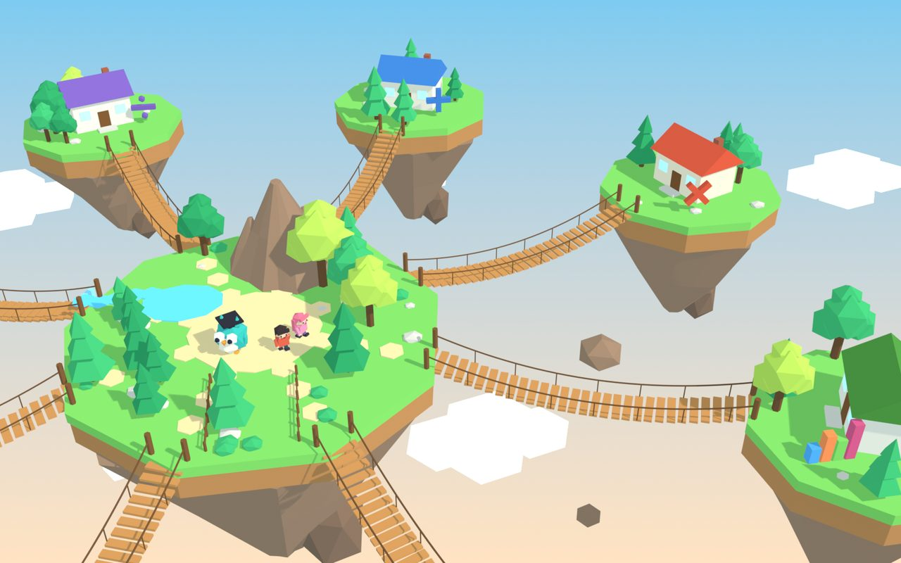
近景：糖果色、稜角分明
Blender 3D 渲染樣張，未進遊戲可在遊戲「風格」選單選
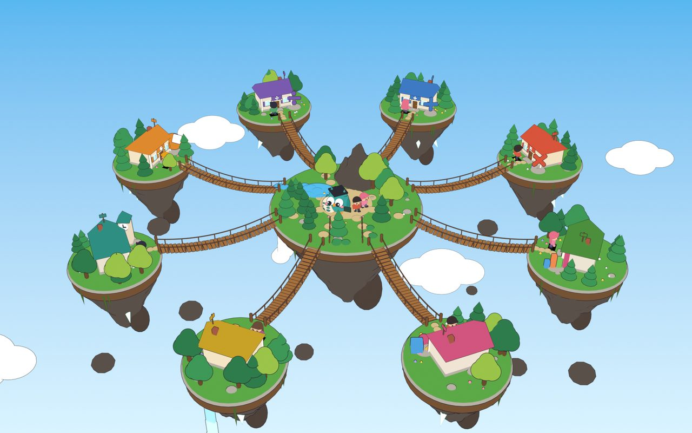
大地圖：三階色塊＋黑色外框，像卡通動畫
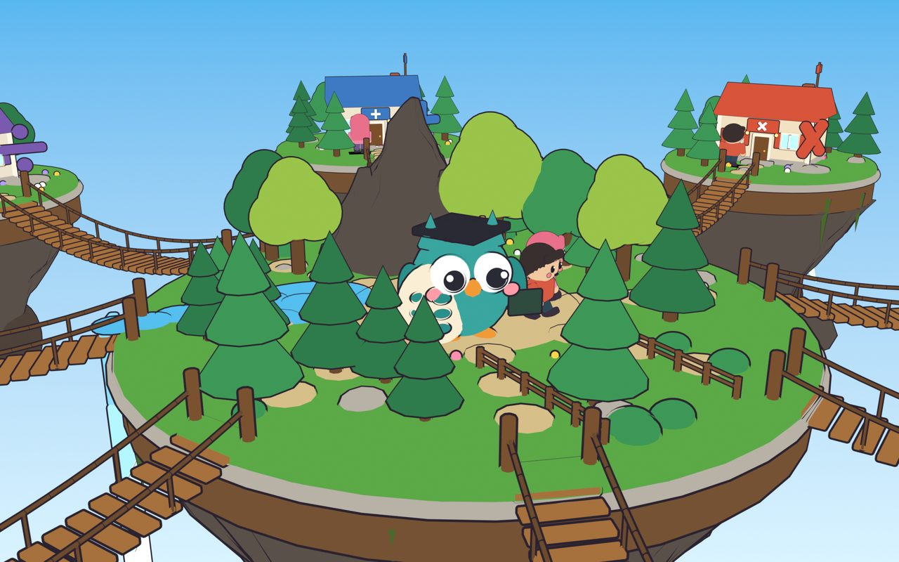
中央廣場
同一套場景，只換材質與光。選了這個風格，遊戲介面會換成粗框黃色按鈕、音樂比較活潑。
Blender 3D 渲染樣張，未進遊戲可在遊戲「風格」選單選
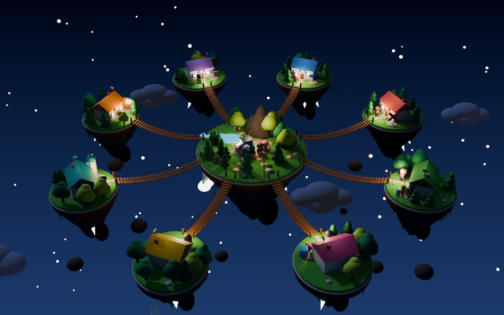
大地圖：星空、門燈、發光水晶
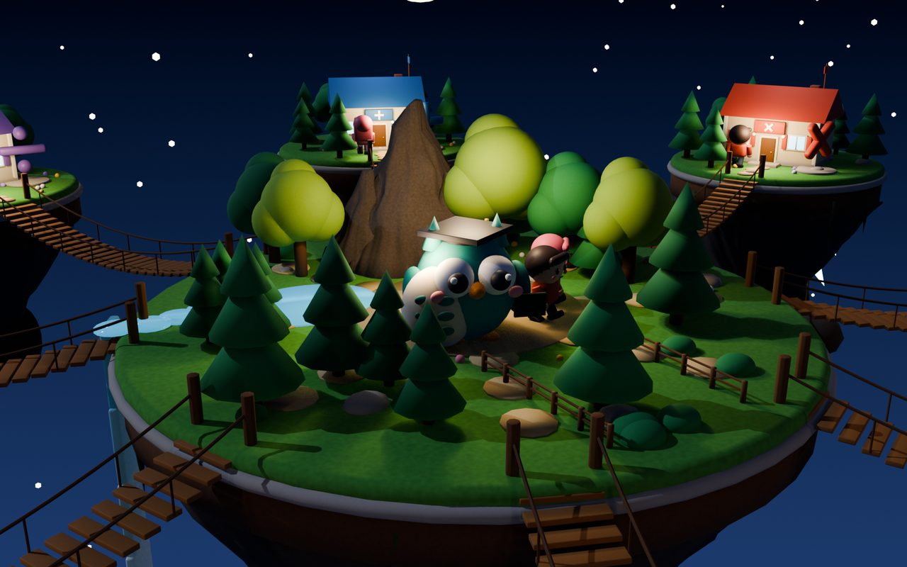
中央廣場
同一套場景，換成夜景燈光。選了這個風格，遊戲介面會變成深色、音樂比較安靜。